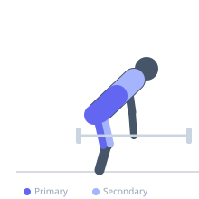
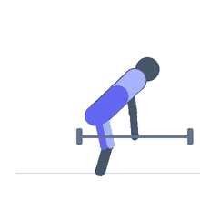

Exercise guide / Deadlift
Deadlift
The conventional deadlift is a fundamental hip-hinge movement in which a loaded barbell is lifted from the floor to a standing position. It is the most effective exercise for overall posterior chain development, training the erector spinae, gluteus maximus, and hamstrings as primary movers while also demanding significant contribution from the upper back and quadriceps.
Primary muscles
erector spinae
gluteus maximus
biceps femoris long head
semitendinosus
semimembranosus
Secondary muscles
rectus femoris
vastus lateralis
latissimus dorsi
trapezius upper
trapezius middle
Stabilizers
transverse abdominis
flexor carpi radialis
Equipment
Standard Barbell
Weight Plates
Optional
Lifting Straps


Starting position
- Stand with feet hip-width apart, toes pointing slightly outward. Place the barbell over your mid-foot, about 1 inch from your shins. Hinge at the hips and bend the knees to grip the bar just outside your legs.
Setup
- Set the barbell on the floor with appropriate weight. Take either a double overhand or mixed grip. Push the floor away rather than thinking about pulling the bar up.
Steps
- Take a deep breath, brace your core hard, and create tension through your lats by imagining you are bending the bar around your legs.
- Drive your feet through the floor to initiate the lift, keeping the bar in contact with your shins as it rises.
- As the bar passes the knees, drive your hips forward and stand tall, squeezing your glutes at the top.
- Lower the bar under control by hinging at the hips first, then bending the knees once the bar passes them.
Coaching cues
- Push the floor away — do not think about pulling the bar up
- Keep your chest up and lats engaged throughout the entire pull
- Squeeze your glutes hard at the top of each rep
Breathing
- Take a full breath before each rep. Hold through the lift and exhale at the top after locking out. Use a Valsalva maneuver for heavy sets.
Range of motion
- Full range: bar starts on the floor, full hip and knee extension at lockout. Do not hyperextend at the top.
Tempo
- 1-0-2-0: fast concentric, controlled 2-second descent
Common mistakes
- Allowing the bar to drift away from the body, increasing lower back lever arm
- Rounding the lower back under load — maintain a neutral spine
- Jerking the bar off the floor rather than applying steady tension first
- Hyperextending the lower back at lockout
Safety
- Never attempt a heavy deadlift without properly warming up the posterior chain
- If lower back pain is present, reduce weight and focus on movement quality
- Learn the hip-hinge pattern with a kettlebell or trap bar before loading heavily
Training
- strength: 1–5 reps
- hypertrophy: 5–8 reps
- endurance: 10–15 reps
- strength: 3–6 sets
- hypertrophy: 3–5 sets
- endurance: 2–4 sets
- Rest: {'strength': 240, 'hypertrophy': 120, 'endurance': 60}